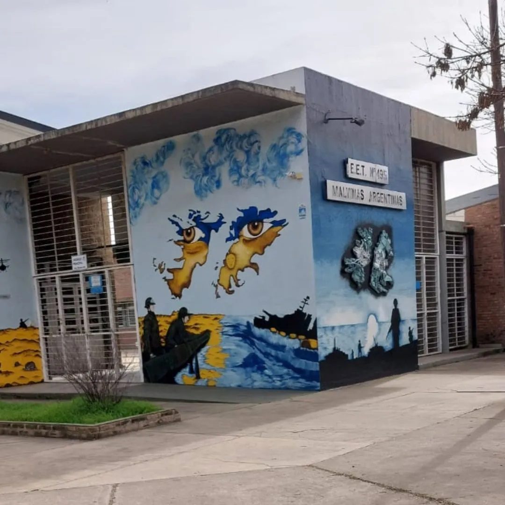
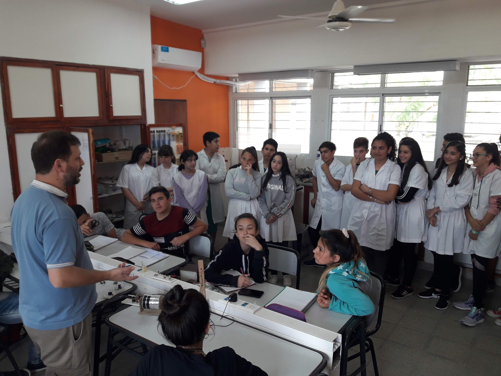
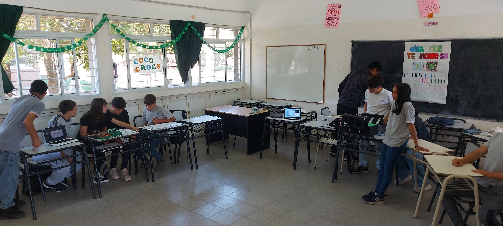
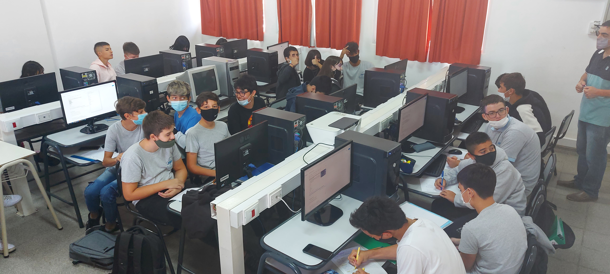
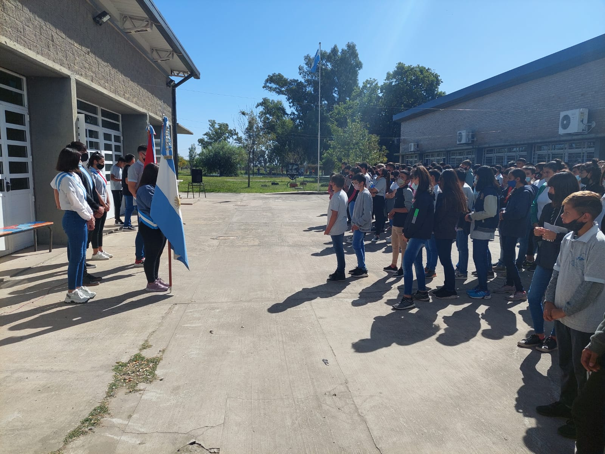
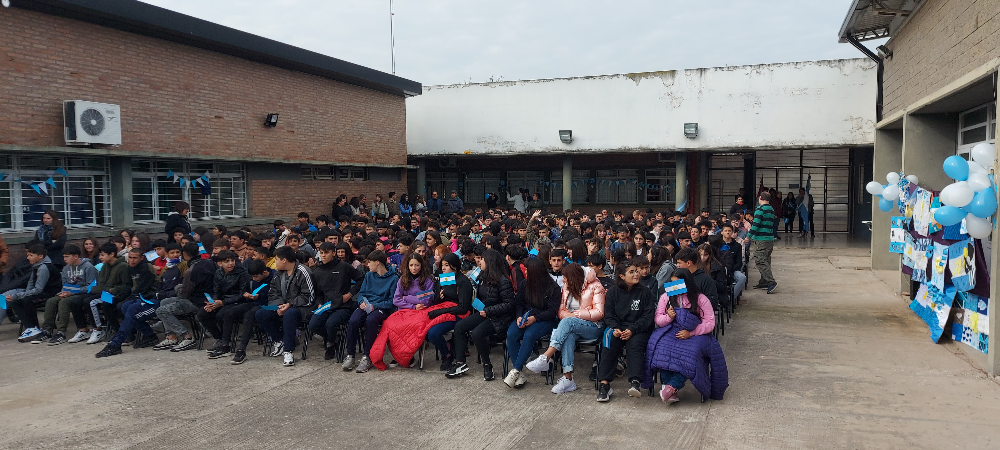

La Escuela
Historia, identidad institucional, autoridades e instalaciones.
Ver másRafaela · Santa Fe · Argentina
Educación técnica, innovación, compromiso y excelencia al servicio de la comunidad.
Conocé la instituciónHistoria, identidad institucional, autoridades e instalaciones.
Ver másInformación sobre la tecnicatura y el perfil profesional del egresado.
Ver másConocé la trayectoria formativa completa desde primer hasta sexto año.
Ver másConsultá fechas, períodos y actividades importantes del ciclo lectivo.
Ver másConocé algunos espacios, actividades y momentos de la vida institucional.
Ver másDirección, teléfono, correo electrónico y medios de contacto y transporte.
Ver másDesde 2005, la E.E.T.P. N° 495 forma técnicos con compromiso, innovación y una fuerte vinculación con la comunidad de Rafaela y la región.
La Escuela de Educación Técnico Profesional N° 495 "Malvinas Argentinas" nació el 2 de mayo de 2005 como anexo de la E.E.T. N° 460, con el propósito de ampliar la oferta de educación en la ciudad de Rafaela y la región y así brindar una nueva oportunidad de formación técnica a jóvenes y adolescentes. Desde sus comienzos, la institución asumió el desafío de construir una identidad propia, basada en la calidad educativa, el compromiso y el trabajo colaborativo.
Los primeros años estuvieron marcados por el esfuerzo de docentes, estudiantes, familias y colaboradores que, aún con recursos limitados y en espacios adaptados, hicieron posible el crecimiento de la escuela. Se impulsaron proyectos científicos y tecnológicos, se fortalecieron los talleres, se incorporó equipamiento, se promovió la participación en ferias y actividades educativas y se consolidó una comunidad comprometida con la formación técnica y humana de sus estudiantes.
El 10 de agosto de 2008 obtuvo oficialmente el nombre de Escuela de Educación Técnico Profesional N° 495 "Malvinas Argentinas", iniciando una nueva etapa de crecimiento y desarrollo. Finalmente, el 12 de marzo de 2013 quedó inaugurado el edificio actual, un logro histórico que representa el esfuerzo, la perseverancia y el compromiso de toda la comunidad educativa, valores que continúan guiando el presente y el futuro de nuestra escuela.
Formación técnica de calidad con una sólida base teórica y práctica.
Aprendizaje en talleres equipados que acercan a los estudiantes al mundo laboral.
Una institución comprometida con el trabajo colaborativo, los valores y la inclusión.
Preparación para continuar estudios superiores o incorporarse al ámbito profesional.
Una formación técnica que combina conocimientos, prácticas profesionalizantes y preparación para el mundo laboral y los estudios superiores.
La Tecnicatura en Informática Profesional y Personal prepara a los estudiantes para desenvolverse en un ámbito tecnológico en permanente evolución, integrando conocimientos teóricos con una sólida formación práctica en talleres y laboratorios.
A lo largo de la carrera se desarrollan capacidades relacionadas con hardware, software, programación, redes, bases de datos, sistemas operativos, seguridad informática, inteligencia artificial y prácticas profesionalizantes, permitiendo afrontar situaciones reales del ámbito laboral y/o continuar estudios superiores.
Instala, configura y mantiene computadoras y dispositivos informáticos.
Implementa, administra y optimiza redes de datos y conectividad.
Desarrolla soluciones informáticas utilizando diferentes lenguajes y herramientas.
Diagnostica y resuelve problemas de hardware y software.
Protege equipos, sistemas e información aplicando buenas prácticas de seguridad.
Brinda asistencia técnica y asesora a usuarios e instituciones.
La formación se desarrolla a lo largo de seis años. Durante los dos primeros se prioriza la formación general junto a los talleres. Desde tercer año comienza la formación técnica específica de la Tecnicatura en Informática Profesional y Personal.
Al finalizar los seis años de formación, los estudiantes obtienen el título de Técnico en Informática Profesional y Personal, con las competencias necesarias para incorporarse al mundo del trabajo o continuar estudios superiores vinculados a la informática y las tecnologías de la información.
Algunos espacios, actividades y momentos que reflejan la vida institucional de la Escuela de Educación Técnico Profesional N.º 495 "Malvinas Argentinas".






Consultá las principales fechas, períodos y actividades previstas durante el ciclo lectivo.
Sin eventos destacados cargados.
Inscripción a Mesas de Exámenes a través del Portal Institucional.
Sin eventos destacados cargados.
Si tenés alguna consulta o necesitás comunicarte con la escuela,
aquí encontrarás todos nuestros medios de contacto.
También te contamos cuáles son las formas de llegar a nuestra
escuela.
Encontrá la ubicación de nuestra escuela a través de Google Maps y las diferentes opciones disponibles para llegar en transporte urbano e interurbano.
La Escuela de Educación Técnico Profesional Nº 495 "Malvinas Argentinas" se encuentra ubicada aproximadamente 500 metros al sur de la Estación Terminal de Ómnibus de Rafaela, sobre calle Iturraspe, lo que permite un acceso rápido y cómodo desde distintos puntos de la ciudad.
Hasta la Terminal llegan, además de empresas de transporte
interurbano, las líneas
1, 2, 3, 4 y 5 del servicio Municipal de
Transporte Urbano de Pasajeros. La
Línea 3 cuenta con una parada sobre
calle Iturraspe, en la esquina del edificio
escolar, facilitando el acceso directo a la institución.
Un acceso cómodo tanto para quienes llegan caminando desde la
Terminal de Ómnibus como para quienes utilizan el transporte
público urbano.